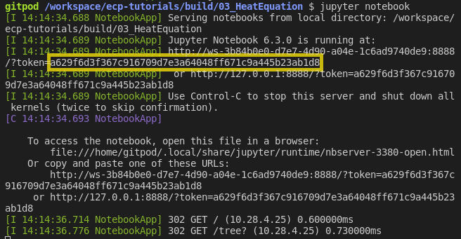
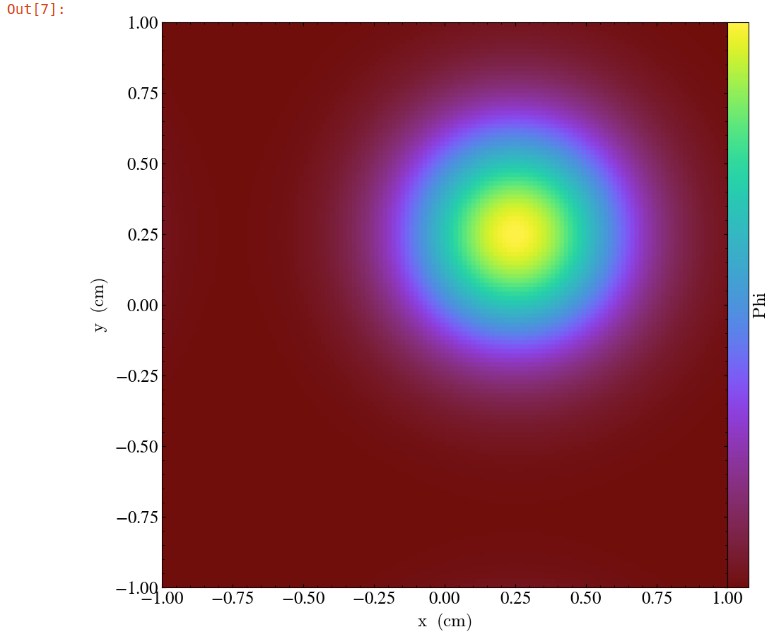

Tutorial: Heat Equation - Simple
Time to Complete: 25 mins
- GOALS:
Compile an AMReX Code
Introduce Basic AMReX Elements
Generate and Visualize Output
In this tutorial we take the steps needed to go from source download to visualized output of an AMReX code. We will demonstrate basic building, compiling and output generation. We will also examine several key AMReX features in a C++ code and plot the output with Python in a Jupyter notebook.
Setting Up Your Environment
This tutorial recommends using Gitpod (Requires a GitHub account). Gitpod provides an online terminal that is already preconfigured for our development environment.
Click here to be taken to the Gitpod workspace.
Building the Project
This example will use CMake to build the project. Navigate to the directory
/workspace/amrex-tutorials/GuidedTutorials/HeatEquation_Simple/
and type
mkdir Build
cd Build
cmake ..
This will create a build folder and run CMake to setup the build configuration.
During this process CMake will read the CmakeLists.txt file in the subdirectory
to generate and download, if necessary, the the build files it
needs to compile the tutorial in the next step.
More information about building options, such as disabling MPI, can be found at https://amrex-codes.github.io/amrex/docs_html/BuildingAMReX_Chapter.html.
Compiling the Code with CMake
After building the project, in the Build directory you will find several new
files and directories created by CMake during the configuration process.
At the prompt type
cmake --build . -j2
CMake will then compile the code and dependencies. The -j2 flag tells CMake
to use 2 processes to speed up compilation. The first time you call cmake --build .
you should see a list of all the source AMReX files being compiled:
When CMake finishes you will be left with an executable named HeatEquation_Simple.
To run the code type:
./HeatEquation_Simple inputs
This command will run the HeatEquation_Simple code with the inputs file as
the input parameters. Parsing of the information in the inputs file is done by
ParmParse. More details can be found at
https://amrex-codes.github.io/amrex/docs_html/Basics.html#parmparse
Code Highlights
At this point we have built, compiled and ran the HeatEquation_Simple code. Now
we will walk through the code and explain some essential features of AMReX syntax.
Basic Structure
Main
├──── Initialize AMReX
├──── Declare Simulation Parameters
├──── Read Parameter Values From Input File
├──── Define Simulation Setup & Geometry
├──── Initialize Data Loop
│ └──── Set Values For Each Cell
├──── Write Initial Plotfile
├──── Main Time Evolution Loop
│ ├──── Evolve Values For Each Cell
│ ├──── Increment
│ └──── Write Plotfile At Given Interval
└──── Finalize AMReX
AMReX Namespace and Required Commands
The AMReX namespace contains many useful features. They are accessed by including
the necessary header files and using the
prefix amrex::. Each
int main(...) using AMReX should begin with amrex::Initialize()
immediately followed by {
and end with } immediately followed by amrex::Finalize(). Together
these commands are responsible for
initializing the AMReX execution environment and proper release of resources. AMReX
classes and features not located between the commands will not function properly.
Other useful features include
amrex::Print() which was written to handle print output during parallel
execution.
The MultiFab Data Structure
A MultiFab is a data structure that AMReX can
distribute among parallel processes. In this Heat Equation example
we use two MultiFabs to hold the current and previous values of \(\phi\)
as defined here.
The declaration of the first MultiFab for the previous values of \(\phi\) is:
amrex::MultiFab phi_old(ba, dm, Ncomp, Nghost);
Here ba is a BoxArray that stores a collection of boxes
on a single level of mesh refinement. dm is a DistributionMapping
that describes how to distribute processing across multiple CPUs and threads.
Ncomp is the number of values stored for each cell of the mesh; in this case, 1
for the scalar \(\phi\). The value for Nghost tells AMReX
how many ghost cells to create outside the box’s valid region.
MFIter and ParallelFor
Now we will examine the main time evolution loop. In this section AMReX’s MFIter and
ParallelFor constructs work in conjunction to provide efficient parallel execution.
The code where this happens is:
for (int step = 1; step <= nsteps; ++step){
phi_old.FillBoundary(geom.periodicity());
for ( amrex::MFIter mfi(phi_old); mfi.isValid(); ++mfi ){
const amrex::Box& bx = mfi.validbox();
const amrex::Array4<amrex::Real>& phiOld = phi_old.array(mfi);
const amrex::Array4<amrex::Real>& phiNew = phi_new.array(mfi);
amrex::ParallelFor(bx, [=] AMREX_GPU_DEVICE (int i, int j, int k){
phiNew(i,j,k) = phiOld(i,j,k) + dt *
( (phiOld(i+1,j,k) - 2.*phiOld(i,j,k) + phiOld(i-1,j,k)) / (dx[0]*dx[0])
+(phiOld(i,j+1,k) - 2.*phiOld(i,j,k) + phiOld(i,j-1,k)) / (dx[1]*dx[1])
+(phiOld(i,j,k+1) - 2.*phiOld(i,j,k) + phiOld(i,j,k-1)) / (dx[2]*dx[2]) );
}); // end ParallelFor
}
time = time + dt;
amrex::MultiFab::Copy(phi_old, phi_new, 0, 0, 1, 0);
amrex::Print() << "Advanced step " << step << "\n";
if (plot_int > 0 && step%plot_int == 0){
const std::string& pltfile = amrex::Concatenate("plt",step,5);
WriteSingleLevelPlotfile(pltfile, phi_new, {"phi"}, geom, time, step);
}
}
First note the outer for loop that counts the time step in our simulation. At each step
we begin by calling phi_old.FillBoundary(geom.periodicity()). This fills ghost cells
based on the previous state of \(\phi\) with periodic boundary conditions.
MFIter
The next for loop,
for ( amrex::MFIter mfi(phi_old); mfi.isValid(); ++mfi )
uses the data object MFIter to separate the mesh across processes for individual operations. Within this loop
the active piece of the mesh is defined by mfi.validbox() and is accessed via bx on the line,
const amrex::Box& bx = mfi.validbox();
In the next lines, the part of MultiFab data that pertains to the current active
piece of the mesh is converted to an Array4 data type for i,j,k access:
const amrex::Array4<amrex::Real>& phiOld = phi_old.array(mfi);
const amrex::Array4<amrex::Real>& phiNew = phi_new.array(mfi);
ParallelFor
ParallelFor provides parallel execution of i,j,k operations that would otherwise require
three nested loops. This AMReX construct automatically adapts for efficient computation
based on the available hardware, including CPU and CPU+GPU variations.
In this example, it is here we compute the
forward Euler step (see Heat Eqn) with the code:
amrex::ParallelFor(bx, [=] AMREX_GPU_DEVICE (int i, int j, int k){
phiNew(i,j,k) = phiOld(i,j,k) + dt *
( (phiOld(i+1,j,k) - 2.*phiOld(i,j,k) + phiOld(i-1,j,k)) / (dx[0]*dx[0])
+(phiOld(i,j+1,k) - 2.*phiOld(i,j,k) + phiOld(i,j-1,k)) / (dx[1]*dx[1])
+(phiOld(i,j,k+1) - 2.*phiOld(i,j,k) + phiOld(i,j,k-1)) / (dx[2]*dx[2]) );
}); // end ParallelFor
The rest of the code in the main time evolution loop updates the time and
MultiFab data, prints a status update to terminal, and writes
output to a plot file that will be used for visualization.
Visualizing Output
Data Files
In main.cpp we called a plot function in two places. The
first time was to plot initial data.
129 if (plot_int > 0)
130 {
131 int step = 0;
132 const std::string& pltfile = amrex::Concatenate("plt",step,5);
133 WriteSingleLevelPlotfile(pltfile, phi_old, {"phi"}, geom, time, 0);
134 }
The second time plots were generated at given intervals during the main time progression loop.
171 if (plot_int > 0 && step%plot_int == 0)
172 {
173 const std::string& pltfile = amrex::Concatenate("plt",step,5);
174 WriteSingleLevelPlotfile(pltfile, phi_new, {"phi"}, geom, time, step);
175 }
Each time we run the code it will create a series of directories which contain
data for visualization. Now run HeatEquation_Simple with the inputs
file. After it finishes your directory should look like this.
Visualization in Jupyter
We will use Python and the yt package in a Jupyter notebook to generate plots for the data in the directories created in the previous step. First launch the Jupyter notebook with the command:
jupyter notebook
When Jupyter starts, it will generate a token at the command line and ask for a password in the window it opened. Copy the token to enter to the notebook.
Once the notebook starts, find Visualization.ipynb and open it.
In this file there are additional notes about the
heat equation example, followed by several cells that use yt
commands to read AMReX output files.
yt
The following commands import the yt package and plot
a 2D slice of the output at from the 1000th time step.
import yt
from yt.frontends.boxlib.data_structures import AMReXDataset
ds = AMReXDataset("plt01000")
sl = yt.SlicePlot(ds, 2, ('boxlib', 'phi'))
sl
In our example, the commands are already written in the notebook. To run them, select from the menu: Kernel -> Restart & Run All. Once the run is complete, you will get the following plot.
What’s Next?
The code in this example was simplified down to a single file. Other convenient features that require more complex syntax were removed for the sake of a straight-forward presentation. In the next example we’ll put these pieces back and write code like an AMReX developer.